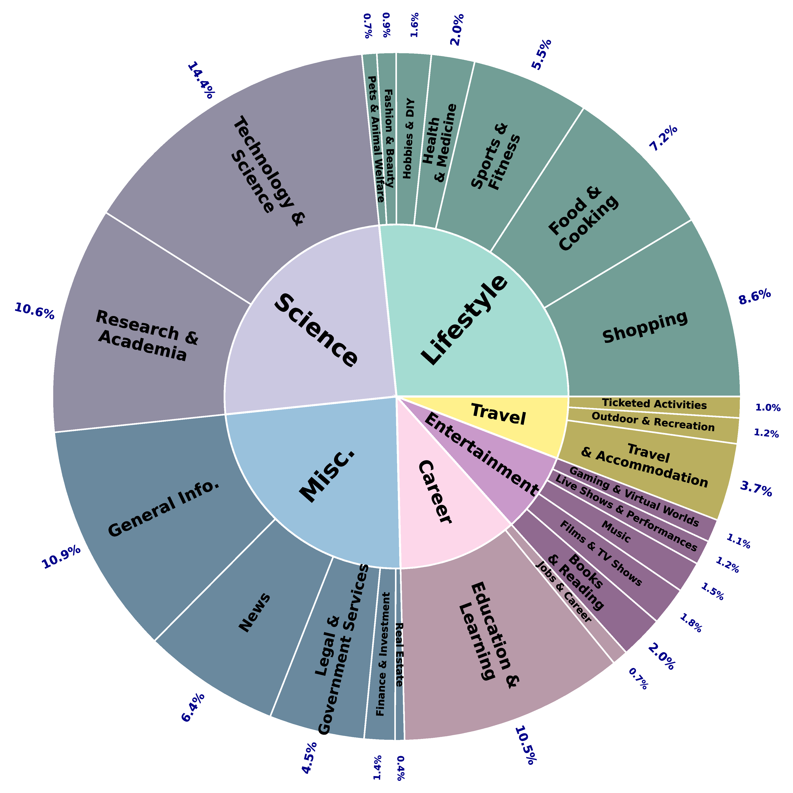
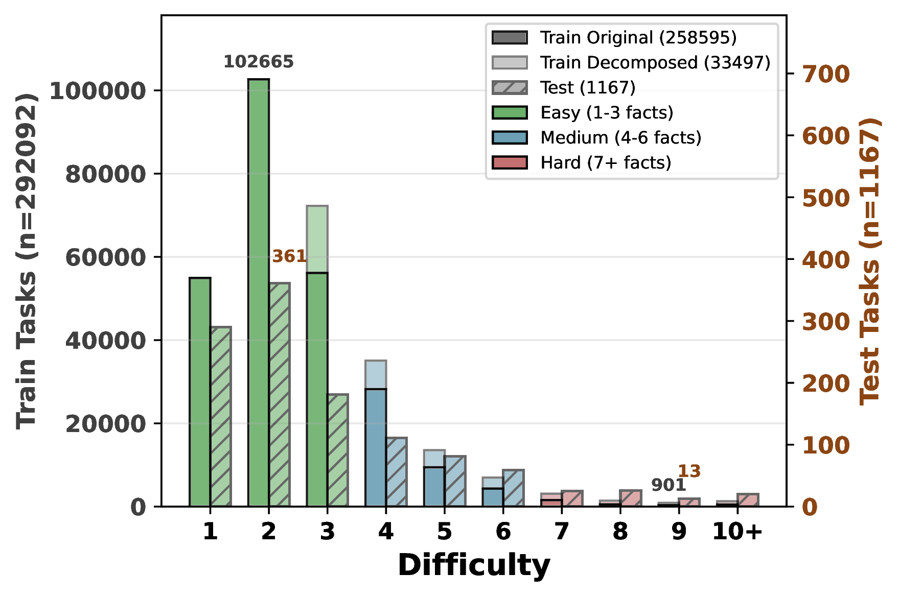
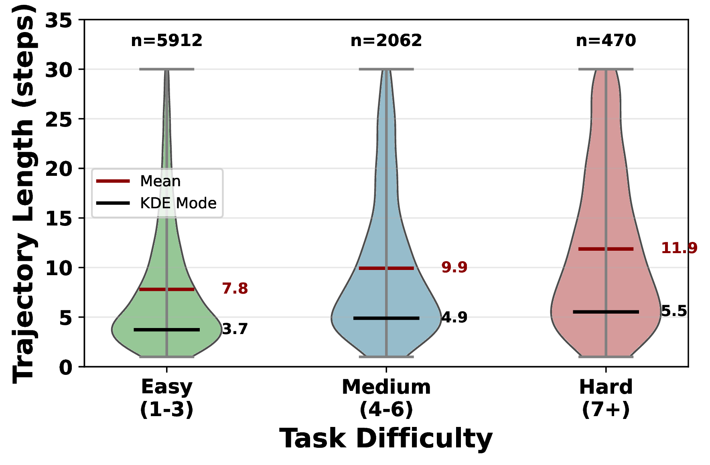
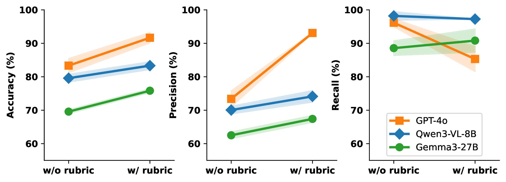

Recipe Overview 🧑🍳

We present WebGym, the largest-to-date open-source environment for training realistic visual web agents. Real websites are non-stationary and diverse, making artificial or small-scale task sets insufficient for robust policy learning. WebGym contains nearly 300,000 tasks with rubric-based evaluations across diverse, real-world websites and difficulty levels. We train agents with a simple reinforcement learning (RL) recipe, which trains on the agent's own interaction traces (rollouts), using task rewards as feedback to guide learning. To enable scaling RL, we speed up sampling of trajectories in WebGym by developing a high-throughput asynchronous rollout system, designed specifically for web agents. Our system achieves a 4-5× rollout speedup compared to naive implementations. Second, we scale the task set breadth, depth, and size, which results in continued performance improvement. Fine-tuning a strong base vision-language model, Qwen-3-VL-8B-Instruct, on WebGym results in an improvement in success rate on an out-of-distribution test set from 26.2% to 42.9%, significantly outperforming agents based on proprietary models such as GPT-4o and GPT-5-Thinking that achieve 27.1% and 29.8%, respectively. This improvement is substantial because our test set consists only of tasks on websites never seen during training, unlike many other prior works on training visual web agents.
Training with online RL requires a large number of model-generated rollouts guided by reliable reward signals. To learn generalizable policies, the task set must (1) span diverse domains and websites, (2) cover a range of difficulties from atomic to compositional tasks, and (3) include verifiable evaluators that translate outcomes into meaningful learning signals.
| Source Task Set | Difficulties | # Websites | # Tasks |
|---|---|---|---|
| InSTA-v3 | ✗ | 146,348 | 146,441 |
| PAE-WebVoyager | ✗ | 13 | 128,499 |
| AgentSynth-Web | ✓ | 328 | 2,086 |
| BrowseComp | ✗ | 7 | 1,266 |
| TravelPlanner | ✗ | 1 | 1,225 |
| Mind2Web-Live | ✗ | 76 | 542 |
| Online Mind2Web | ✗ | 139 | 300 |
| DeepShop | ✗ | 1 | 150 |
| Mind2Web-2 | ✗ | 44 | 130 |
| GAIA-Web | ✓ | 1 | 87 |
| WebGym (Ours) | ✓ | 127,645 | 292,092 |
Task sourcing for WebGym. We aggregate web agent task sets from 10 widely-used benchmarks and environments to seed our procedural construction. WebGym provides the largest task set with difficulty annotations.
Task decomposition in WebGym. We decompose complex tasks into atomic subtasks, enabling compositional learning from simple to complex tasks.
Domain distribution in WebGym. Distribution of tasks across domains according to the Mind2Web-2 taxonomy (6 domains, 24 subdomains). The task set spans 127,645 unique websites with broad domain coverage, promoting diverse training samples across e-commerce, information retrieval, social media, entertainment, and more.
Difficulty distribution across training and out-of-distribution test sets. The transparent bars overlaying the solid bars represent decomposed tasks, while the slashed bars indicate the test set. Around 80% of tasks are Easy (difficulty 1-3), which is intentional to encourage learning generalizable basic skills while focusing on more specific objectives at higher difficulty levels.
Distribution of trajectory lengths by task difficulty (run-time statistics). Violin plots show the probability density of trajectory lengths for answered trajectories, with the KDE mode (black line, where the violin is widest) indicating the most likely length and mean (red) indicating the average. Easy tasks (difficulty 1-3) require 7.8 steps on average, medium tasks (4-6) require 9.9 steps, and hard tasks (7+) demand 11.9 steps, confirming that harder tasks involve more complex multi-step action and navigation.
Agreement between automated evaluators and human judgment. Rubric-based evaluation (with explicit criteria) consistently improves agreement over task-only evaluation, yielding higher accuracy and precision across LLM-based evaluators. Among the evaluators, GPT-4o shows the largest shift after adding the rubric: precision increases the most while recall drops slightly, indicating that the rubric makes GPT-4o apply stricter, more conservative pass criteria.
To enable efficient RL training at scale, we developed a high-throughput asynchronous rollout system designed specifically for web agents. Our system achieves a 4-5× speedup compared to naive implementations.
Our rollout system employs an asynchronous architecture that decouples environment simulation from policy inference. This design enables efficient batching of policy forward passes across multiple concurrent environments, maximizing GPU utilization while maintaining high throughput.
Async design (ours): The asynchronous architecture decouples different threads in a batch.
4-5×
speedup vs. naive implementation
1,800
trajectories in 30 minutes
13.2
steps per trajectory
128 CPUs
24 H100s
hardware configuration
The asynchronous design enables efficient scaling to large batch sizes, which is critical for online RL training. By batching policy queries across multiple environments, we achieve high GPU utilization while maintaining low latency for individual environment steps. This design is particularly effective for web agents, where environment simulation (browser interactions) can be parallelized across CPU cores while policy inference is batched on GPUs.
We conducted comprehensive benchmarks to evaluate the scalability and efficiency of our rollout system. The results demonstrate strong scaling with both increased parallelism and GPU resources.
CPU Scaling: Rollout time decreases significantly with increased CPU parallelism, demonstrating efficient scaling.
We train agents using a simple REINFORCE-style RL training procedure on WebGym. Our results show that fine-tuning Qwen3-VL-Instruct-8B with RL on WebGym significantly improves performance on held-out test tasks.
| Base Model | Prompt | RL on WebGym | Performance (%) | |
|---|---|---|---|---|
| Proprietary Models | GPT-4o | Memory | ✗ | 27.1 |
| GPT-5 | Memory | ✗ | 29.8 | |
| Open-source Models | Qwen3-VL-Instruct-8B | Official | ✗ | 27.4 |
| Qwen3-VL-Instruct-8B | Memory | ✗ | 26.2 | |
| Qwen3-VL-Thinking-8B | Memory | ✗ | 28.2 | |
| Qwen3-VL-Instruct-8B | Memory | ✓ (Ours) | 42.9 |
WebGym empowers the small Qwen3-VL-Instruct-8B model to achieve state-of-the-art performance on the holdout test task set, arriving at a 42.9% success rate, significantly surpassing all agents empowered by proprietary models and other open-source models.
We analyze the effects of scaling different dimensions of WebGym: task set breadth (domain diversity), depth (difficulty composition), and size, as well as the train-time interaction horizon.
Below we show the training curves comparing different ablations and showing performance across difficulty levels.
Figure: Ablation study on model variants, prompting, and action filtering. Curves are smoothed with EMA (α=0.5).
(a) Overall
(b) Easy (1-3)
(c) Medium (4-6)
(d) Hard (7+)
Figure: Impact of scaling dimensions on test-set success rate across difficulty levels. Curves are smoothed with EMA (α=0.5).
We presented WebGym, the largest open-source training environment for visual web agents with nearly 300,000 diverse tasks. By combining a high-throughput asynchronous rollout system with strategic scaling across task breadth, depth, and size, we demonstrated that simple reinforcement learning can significantly improve agent performance. Our trained agent achieves 42.9% success rate on out-of-distribution websites, outperforming proprietary models and validating that scaling training environments leads to more generalizable web agents.
@article{bai2025webgym,
title={WebGym: Scaling Training Environments for Visual Web Agents with Realistic Tasks},
author={Bai, Hao and Taymanov, Alexey and Zhang, Tong and Kumar, Aviral and Whitehead, Spencer},
journal={arXiv preprint},
year={2025}
}